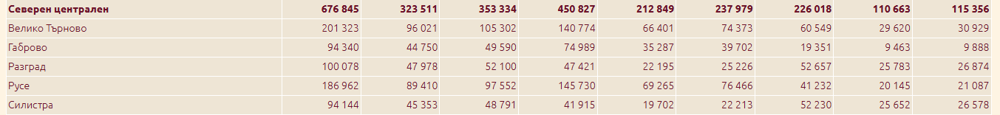
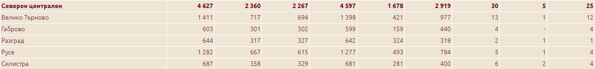
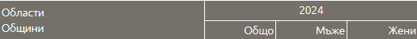
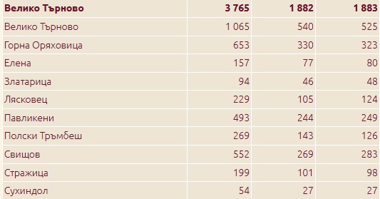
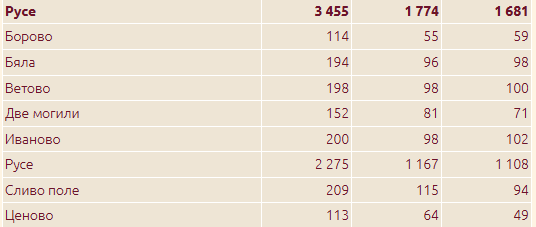
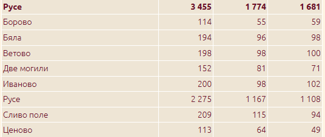
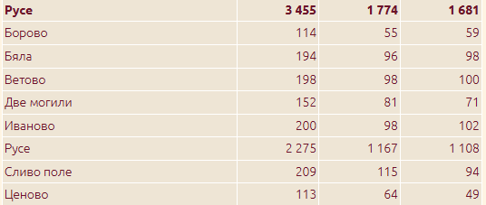

Население

Ръждаемост

Смъртност по области
 


 

Селищна мрежа и селища
Северно централен район
Населени места : 961
Града : 40
Села : 921
Най-много населено място : Плевен
Най-малко населено място : село Кашенци
Средната гъстота на селищата е 6,3 селища/100км 2 - 16,9 в Габровска, 7,2 във В.Търновска, 3,6 в Ловешка и само 2,7 в Плевенска област.
Северен централен район за планиране е един от шестте райони в България, създадени за статистически и административни цели. Той обхваща територия от 14 974 кв. км, което представлява около 13,49% от площта на страната. В състава му влизат пет области: Велико Търново, Габрово, Разград, Русе и Силистра. Към 31 декември 2022 г. населението на района е 686 334 души, което представлява приблизително 10,64% от общото население на България. Гъстотата на населението е 45,84 души на кв. км – значително под средната за страната от 58,09 души на кв. км. Град Плевен е най-големия град в северен централен район, в сърцето на Дунавската равнина, и е седмият по големина град в страната. Той е административен център на област Плевен и община Плевен, и играе ключова роля като културен, икономически и транспортен център в региона. С население от 99 220 души (15 юни 2024 г.) Плевен е важен транспортен възел с отлични шосейни и железопътни връзки. През града минава европейският маршрут E83, свързващ София с Русе и Варна. Градът има добре развита инфраструктура, включително автобусен и железопътен транспорт, което го прави лесно достъпен от различни части на страната
Според данни от март 2024 г., в Кашенци живеят 8 души . Село Кашенци се намира в община Трявна, област Габрово, в Северен централен район на България. Разположено е в планински район, на около 5 км западно от град Трявна, по пътя към Габрово. с надморска височина около 686 метра . Кашенци е разположено в живописна планинска местност, характерна за региона на Стара планина. Близостта му до град Трявна го прави достъпно, като същевременно предлага спокойствие и природна красота.През ноември 2024 г., поради продължително засушаване и намален дебит на водоизточниците, в селото е въведен воден режим..
